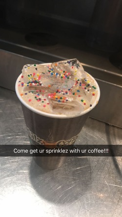
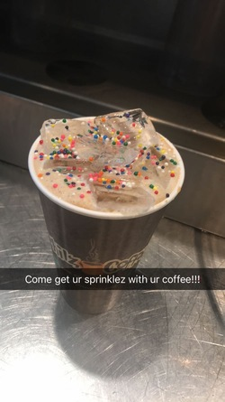

Marlene Barrios
I am nineteen years old. I am a second year studying Psychology at University of California-Riverside. My hometown is San Mateo, CA which is in Northern California but I attend school in Southern California. After gaining my bachelors degree in Psychology I plan to go to graduate school in order to gain my masters. After my masters, I plan on becoming a counselor and working with young children who have experienced trauma at a young age to see how their trauma is affecting their growth.
Currently, I have had experience as a hostess, barista, cashier, resident advisor, intern, and student. I have gained lots of experience because I have been working ever since I turned sixteen. I have always done both school and work at the same time. Currently, I am a student and I work two jobs.Currently, I am a student and I work two jobs. During the summer, I will be interning in New York at Columbia University. I have gained valuable skills thanks to all the jobs I have done. For example, I am very well at organizing, time management, and I have good customer service skills. I also know how to handle money, such as transactions. I've also learned how to make great tasting tea and coffe!
Currently, I am a resident advisor which means I oversee a group of about 50 residents. Some of my responsibilities include creating an inclusive enviornment for all my residents as well as creating a safe enviornment for them. I make programs for my residents once a month which includes a theme, such as "personal development" or "wellness," etc. I also am in charge of enforcing housing policies and making sure my residents, as well as other residents in my community are following policy. I have a shift once every two-weeks where I am 'on-call.' It means I have to answer the phone and attend to residents need at whatever hour they call. At my second job, I am a student assistant. I help people with their transactions at the office I work at. I also answer the phone and assist people with any questions they may have regarding our office.
Experience
Resident Advisor
• Developed community inclusivity among 50 residents, maximizing positive interactions
• Implemented and enforced all University and On Campus Housing policies
• Worked with a staff of fellow Resident advisors on planning programs, performing duties, and interacting with residents
Barista
• Provided excellent customer service while making 40 to 60 customized blended drinks per hour
• Collaborate with 3-12 team members to keep store clean to maintain sanitation standards and encourage repeat business
Housing Programs and Services Intern
• Drafted and organized program manuals and policy binders
• Researched potential unit availability for senior housing
• Created community spotlight flyers to highlight cities in or near the bay area to encourage clients to consider cities with cheaper housing options
• Researched county resources with an emphasis in San Mateo County and Santa Clara county and created new flyers and binders for clients and staff
Education
UC Riverside
Portfolio
.jpg)
.jpg)

